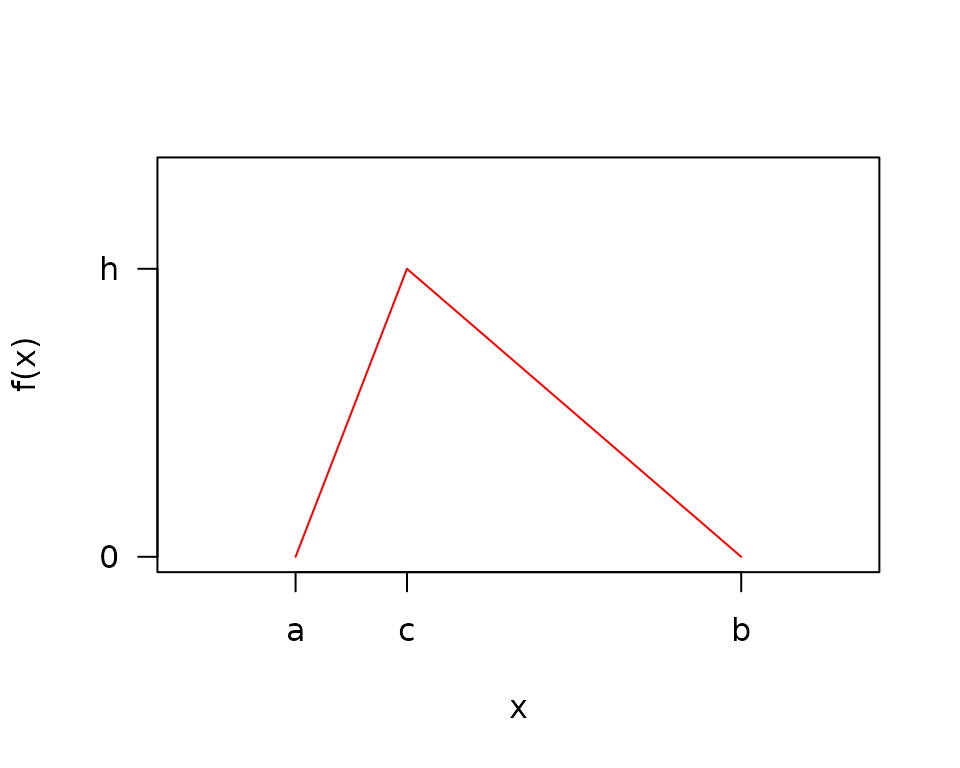

Triangle Notation

-
= minimum
-
= maximum
-
= mode
-
= density at the mode =
Triangle Probability Density Funciton (PDF)
Lemma 1: (Triangle PDF).
Given,
and
or
the triangle probability density function is given by
if a random variable X has a PDF f(x), then we say
Proof
The triangle is made of two lines:
Integrating the pdf under these two equations to solve for
:
The PDF should be zero at each end of the interval and be continuous
at
Triangle Cumulative Distribution Function (CDF)
Lemma 2: (Triangle CDF).
Given,
and
or
the cumulative distribution function over
is
Proof
The CDF should be zero at
,
continuous at
,
and one at
Triangle Mean
Lemma 3: (Triangle Mean).
The mean of the triangle distribution is
Proof
Triangle Variance
Lemma 4: (Triangle Variance).
The variance of the triangle distribution is
Proof
Method of Moments Estimation
The Type 1 and 2 notation is used in the package, but are not
externally accepted “types” of Methods of Moments.
Type 1
Lemma 5: (Method of Moments Estimator 1).
Estimators for the Triangle parameters are
Motivation
The sample minimum is an overestimate for
and the sample maximum is an underestimate for
.
is a biased estimator for
.
Simulation shows that
is consistent for
.
Type 2
Lemma 6: (Method of Moments Estimator 2).
Estimators for the Triangle parameters are the solution to these
equations for the mean, variance, and skewness
Maximum Likelihood Estimation
The procedure for maximum likelihood estimation involves maximizing
the likelihood with respect to
for a fixed
and
,
followed by minimizing the negative log likelihood with respect to
and
for a fixed
.
Maximizing the Likelihood with respect to
(given
and
)
This discussion follows the results from Samuel Kotz and Johan Rene van Dorp.
Beyond Beta
For the purposes of this section, with a fixed
and
,
the sample can be easily rescaled to
and
.
This section will proceed on
with the mode at
Assume that the sample is ordered into order statistics
.
Also, note that
.
In other words, the mode falls between the
and
order statistics.
To maximize the likelihood, we can first maximize with respect to
and then locate
between the
and
order statistics. For notation purposes, also define
and
.
$$\large \max_{0 \le c \le 1} L(x|c) =
\max_{r \ \epsilon \ (0,\dots,n)} \ \ \max_{x_{(r)} \le c \le x_{(r+1)}}
\ \ L(x|c)$$
Case 1:
is between the first and second to last order statistic
Noticing that maximizing the likelihood is equivalent to minimizing
the denominator:
$$\large \max L(x|c) = \max_{r \ \epsilon
\ (1,\dots,n-1)} \ \ \min_{x_{(r)} \le c \le x_{(r+1)}} \ \
c^r(1-c)^{n-r}$$
Since
is unimodal with respect to
,
it should be sufficient to test the end points of an interval to find
the minimum on the interval
$$\large = \max_{r \ \epsilon \
(1,\dots,n-1)} \ \ \min_{c \ \epsilon \ (x_{(r)},\ \ x_{(r+1)})} \ \
c^r(1-c)^{n-r}$$
Therefore, for this case, it is sufficient to test the likelihood
using
at each of the sampled points and find the largest.
Side note on
being unimodal
at
.
At
,
is positive, and at
,
is negative. Therefore,
is unimodal on
.
Case 2:
is between 0 and the first order statistic
$$\large \max L(x|c) = \max_{0 \le c \le
x_{(1)}} \prod_{i=1}^{n} \frac{1-x_{(i)}}{1-c} = \prod_{i=1}^{n}
\frac{1-x_{(i)}}{1-x_{(1)}}$$
Choosing the largest endpoint in the interval, creates the smallest
denominator, and the largest likelihood.
Therefore, for this case, it is sufficient to test the likelihood
using
at the first sampled point.
Case 3:
is between the last order statistic
and 1
$$\large \max L(x|c) = \max_{x_{(n)} \le c
\le 1} \prod_{i=1}^{n} \frac{x_{(i)}}{c} = \prod_{i=1}^{n}
\frac{x_{(i)}}{x_{(n)}}$$
Choosing the smallest option in the denominator creates the largest
likelihood. Again, it is sufficient to test the likelihood using
at the largest sample point.
All Cases
For all cases, it is sufficient to compute the sample likelihood
using
equal to each of the samples, and choosing the largest likelihood from
the
options to find the corresponding
.
This calculation is performed with a fixed
and
,
so the test must be performed iteratively as
and
are separately optimized.
Negative Log Likelihood
where
Case 1:
Case 2:
Case 3:
Gradient of the negative Log Likelihood Given
:
The negative log likelihood is not differentiable with respect to
because the limits of the sum
(
and
)
are functions of
.
Therefore the gradient and hessian are derived as if
is fixed.
Case 1:
Case 2:
Case 3:
Hessian of the negative Log Likelihood Given
:
Case 1:
Case 2:
Case 3:
MLE Variance - Covariance
For the optimization of
given
,
we can use the inverse of the hessian of the negative log likelihood for
an estimate of the covariance matrix of
and
.
For the variance in
,
we use the variance of the
order statistic which corresponds to
.
The covariance of
and
is not computed because the negative log likelihood is not
differentiable with respect to
.
Let
denote the Hessian matrix, and let
be the
,
be the
,
and
be the
.
Then,
order statistic
Expected value of the
order statistic
To simplify the notation, define:
Continuing:
By using a binomial expansion, we can prevent having to integrate by
parts multiple times.
Expected Value of
order statistic squared
Continuing from the above derivation:
Variance of the
order statistic
Numerical Stability of Variance and Expected value of
order statistic
Although the above derivation gives an exact solution to the variance
and expected value of the
order statistic of the triangle distribution, the alternative sign
inside the binomial sum and the large orders of magnitude over which
those coefficients span lead to cancellation errors in the results that
are not easy to solve. Exact solutions can be obtained to arbitrary
precision through the use a package like Rmpfr. The
triangle package defaults to the use of numerical
integration for these results.
Logarithmic Triangle distribution
Define:
However,
Therefore, transforming…
Define:
Finding the CDF,
Checking that the CDF is 1 at b,
Now calculating
,